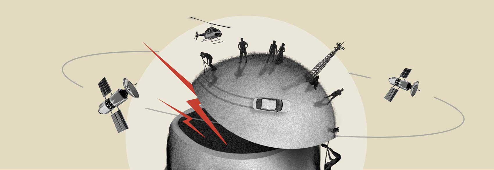

Michal Janicki

Faculty at School of the Art Institute of Chicago

Design Director at IDEO

Resident poster designer at Trap Door Theatre
From Białystok, Poland
About
Hi, I’m Michal Janicki. I’m a designer, film maker, front-end programmer, and educator. I create posters, websites, identities, experiences and films. This site is a timeline of my creative work with a focus on cultural, experimental, volunteer, and personal projects.
I came to Chicago from Poland at the age of 13. I am interested in queer identity and expression, contextualizing digital media, education and film. My husband and I live in the Pilsen neighborhood, and I often get carded when I am wearing a hat.
I came to Chicago from Poland at the age of 13. I am interested in queer identity and expression, contextualizing digital media, education and film. My husband and I live in the Pilsen neighborhood, and I often get carded when I am wearing a hat.
Teaching
I teach classes that focus on graphic design, digital media, motion and compositing.
School of the Art Institute of Chicago:
Type and Motion
University of Illinois at Chicago:
Advanced Digital Media.
Form and Image Studio.
Columbia College:
Compositing.
Motion Design.
School of the Art Institute of Chicago:
Type and Motion
University of Illinois at Chicago:
Advanced Digital Media.
Form and Image Studio.
Columbia College:
Compositing.
Motion Design.
Select Awards + Exhibitions
Typeforce 14 Exhibition, Chicago.
School of the Art Institute of Chicago Pedagogy Start-Up Grant.
Philip K. Dick Science Fiction and Supernatural Film Festival.
SF Queer Film Festival.
Toronto Short Film Festival.
MicroActs Artist Film Screening, London.
International Shorts Film Festival, Australia.
Part-time Faculty Development Grant recipient, Columbia College Chicago.
Communication Arts, Typography Competiton Winner.
Reeling: The Chicago LGBTQ+ International Film Festival.
Chicago Design Museum, Unfolded Exhibit.
aGLIFF, The Austin Gay + Lesbian International Film Festival.
Chicago Design Archive, Permanent Collection.
QCinema Film Festival, Fort Worth, Texas.
AIGA Self Portraits Book.
Chgo Dsgn at the Chicago Cultural Center.
Communication Arts, Website Design Feature.
Good 50x70 Poster Exhibition.
GAG Gallery Exhibit.
James Axeman Memorial Award, UIC Department of Design.
Site Inspire Gallery.
Brutalist Websites Gallery.
Awwwards Site of the Day.
School of the Art Institute of Chicago Pedagogy Start-Up Grant.
Philip K. Dick Science Fiction and Supernatural Film Festival.
SF Queer Film Festival.
Toronto Short Film Festival.
MicroActs Artist Film Screening, London.
International Shorts Film Festival, Australia.
Part-time Faculty Development Grant recipient, Columbia College Chicago.
Communication Arts, Typography Competiton Winner.
Reeling: The Chicago LGBTQ+ International Film Festival.
Chicago Design Museum, Unfolded Exhibit.
aGLIFF, The Austin Gay + Lesbian International Film Festival.
Chicago Design Archive, Permanent Collection.
QCinema Film Festival, Fort Worth, Texas.
AIGA Self Portraits Book.
Chgo Dsgn at the Chicago Cultural Center.
Communication Arts, Website Design Feature.
Good 50x70 Poster Exhibition.
GAG Gallery Exhibit.
James Axeman Memorial Award, UIC Department of Design.
Site Inspire Gallery.
Brutalist Websites Gallery.
Awwwards Site of the Day.

Want to know more? Email me at
studiobema@gmail.com
studiobema@gmail.com